Plot curves of selected values (e.g., PPV or NPV) as a function of prevalence.
Source:R/plot_curve.R
plot_curve.Rdplot_curve draws curves of selected values
(including PPV, NPV)
as a function of the prevalence (prev)
for given values of
sensitivity sens (or
miss rate mirt) and
specificity spec (or
false alarm rate fart).
Usage
plot_curve(
prev = num$prev,
sens = num$sens,
mirt = NA,
spec = num$spec,
fart = NA,
what = c("prev", "PPV", "NPV"),
p_lbl = "def",
p_lwd = 2,
what_col = pal,
uc = 0,
show_points = TRUE,
log_scale = FALSE,
prev_range = c(0, 1),
lbl_txt = txt,
main = txt$scen_lbl,
sub = "type",
title_lbl = NULL,
cex_lbl = 0.85,
col_pal = pal,
mar_notes = FALSE,
...
)Arguments
- prev
The condition's prevalence
prev(i.e., the probability of condition beingTRUE). Ifprev = NA, the curves inwhatare plotted without points (i.e.,show_points = FALSE).- sens
The decision's sensitivity
sens(i.e., the conditional probability of a positive decision provided that the condition isTRUE).sensis optional when its complementmirtis provided.- mirt
The decision's miss rate
mirt(i.e., the conditional probability of a negative decision provided that the condition isTRUE).mirtis optional when its complementsensis provided.- spec
The decision's specificity
spec(i.e., the conditional probability of a negative decision provided that the condition isFALSE).specis optional when its complementfartis provided.- fart
The decision's false alarm rate
fart(i.e., the conditional probability of a positive decision provided that the condition isFALSE).fartis optional when its complementspecis provided.- what
Vector of character codes that specify the selection of curves to be plotted. Currently available options are
c("prev", "PPV", "NPV", "ppod", "acc")(shortcut:what = "all"). Default:what = c("prev", "PPV", "NPV").- p_lbl
Type of label for shown probability values, with the following options:
"abb": show abbreviated probability names;"def": show abbreviated probability names and values (default);"nam": show only probability names (as specified in code);"num": show only numeric probability values;"namnum": show names and numeric probability values;"no": hide labels (same forp_lbl = NAorNULL).
- p_lwd
Line widths of probability curves plotted. Default:
p_lwd = 2.- what_col
Vector of colors corresponding to the elements specified in
what. Default:what_col = pal.- uc
Uncertainty range, given as a percentage of the current
prev,sens, andspecvalues (added in both directions). Default:uc = .00(i.e., no uncertainty). Plausible ranges are0 < uc < .25.- show_points
Boolean value for showing the point of intersection with the current prevalence
previn all selected curves. Default:show_points = TRUE.- log_scale
Boolean value for switching from a linear to a logarithmic x-axis. Default:
log_scale = FALSE.- prev_range
Range (minimum and maximum) of
prevvalues on x-axis (i.e., values inc(0, 1)range). Default:prev_range = c(0, 1).- lbl_txt
Labels and text elements. Default:
lbl_txt = txt.- main
Text label for main plot title. Default:
main = txt$scen_lbl.- sub
Text label for plot subtitle (on 2nd line). Default:
sub = "type"shows information on current plot type.- title_lbl
Deprecated text label for current plot title. Replaced by
main.- cex_lbl
Scaling factor for the size of text labels (e.g., on axes, legend, margin text). Default:
cex_lbl = .85.- col_pal
Color palette (if what_col is unspecified). Default:
col_pal = pal.- mar_notes
Boolean value for showing margin notes. Default:
mar_notes = FALSE.- ...
Other (graphical) parameters.
Details
If no prevalence value is provided (i.e., prev = NA),
the desired probability curves are plotted without showing
specific points (i.e., show_points = FALSE).
Note that a population size N is not needed for
computing probability information prob.
(An arbitrary value can be used when computing frequency information
freq from current probabilities prob.)
plot_curve is a generalization of
plot_PV (see legacy code)
that allows plotting additional dependent values.
See also
comp_prob computes current probability information;
prob contains current probability information;
comp_freq computes current frequency information;
freq contains current frequency information;
num for basic numeric parameters;
txt for current text settings;
pal for current color settings.
Other visualization functions:
plot.riskyr(),
plot_area(),
plot_bar(),
plot_crisk(),
plot_fnet(),
plot_icons(),
plot_mosaic(),
plot_plane(),
plot_prism(),
plot_tab(),
plot_tree()
Examples
# Basics:
plot_curve() # default curve plot, same as:
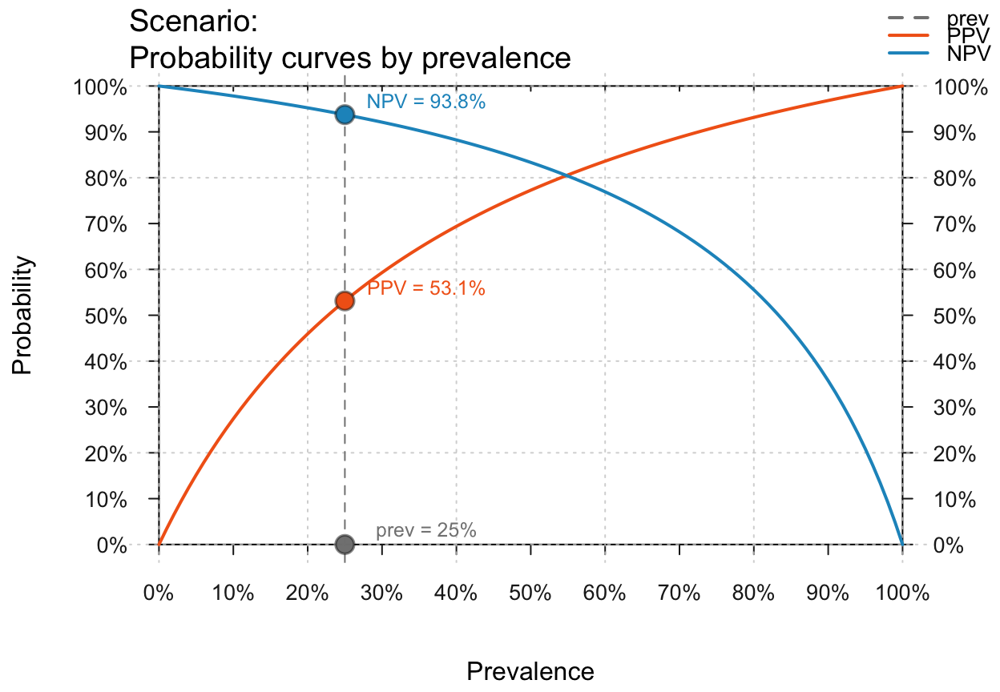
# plot_curve(what = c("prev", "PPV", "NPV"), uc = 0, prev_range = c(0, 1))
# Showing no/multiple prev values/points and uncertainty ranges:
plot_curve(prev = NA) # default curves without prev value (and point) shown
#> No prevalence value provided: Plotting curves without points.
 plot_curve(show_points = FALSE, uc = .10) # curves w/o points, 10% uncertainty range
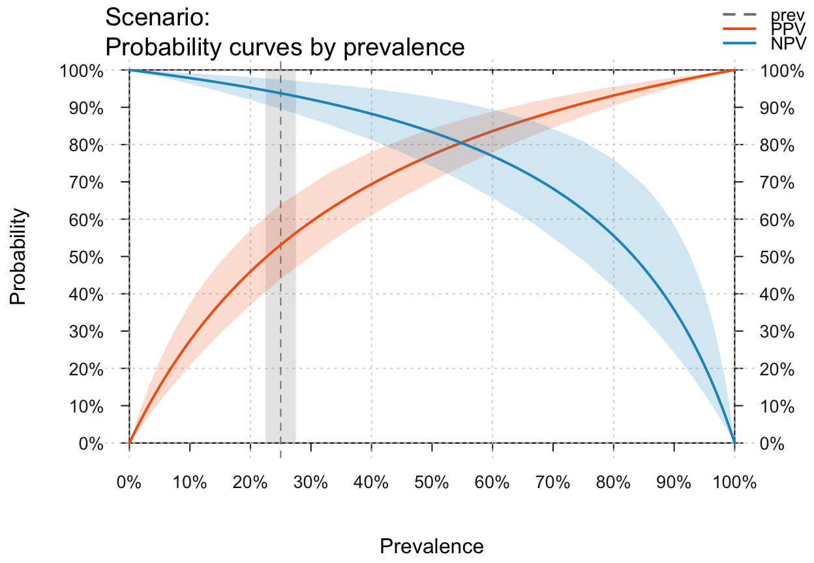
plot_curve(prev = c(.10, .33, .75)) # 3 prev values, with numeric point labels
#> Multiple prevalence values provided: Using numeric values to label points.
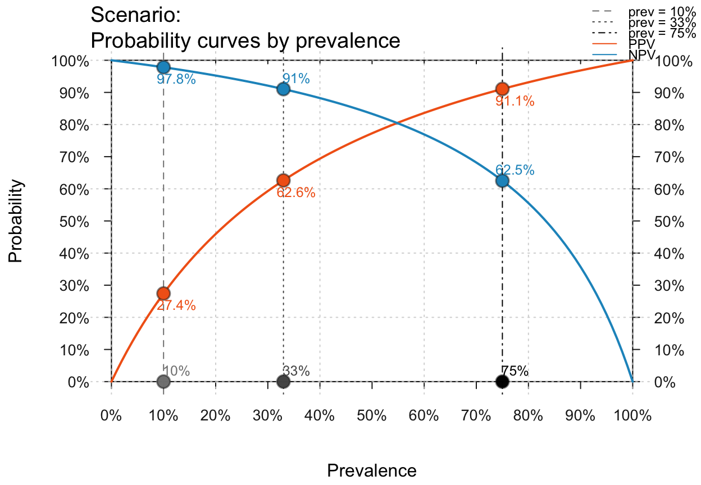
plot_curve(prev = c(.10, .33, .75), p_lbl = "no", uc = .10) # 3 prev, no labels, 10% uc
#> Multiple prevalence values provided: Using numeric values to label points.
plot_curve(show_points = FALSE, uc = .10) # curves w/o points, 10% uncertainty range
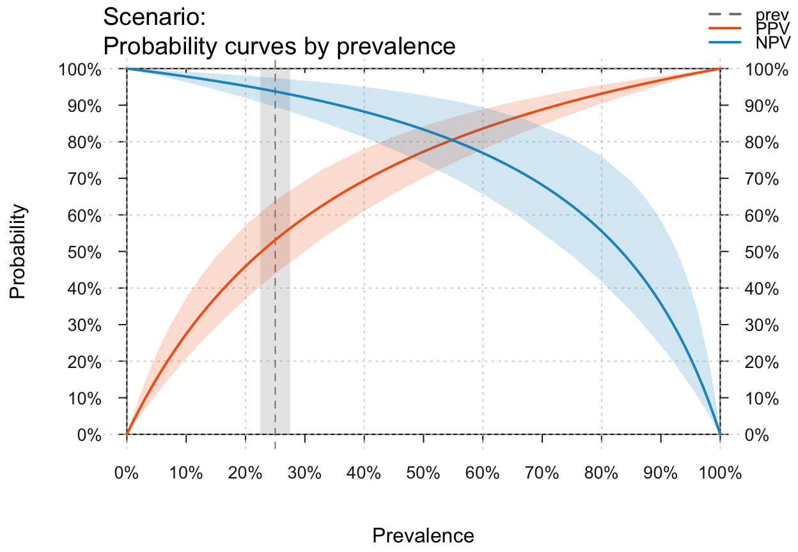
plot_curve(prev = c(.10, .33, .75)) # 3 prev values, with numeric point labels
#> Multiple prevalence values provided: Using numeric values to label points.
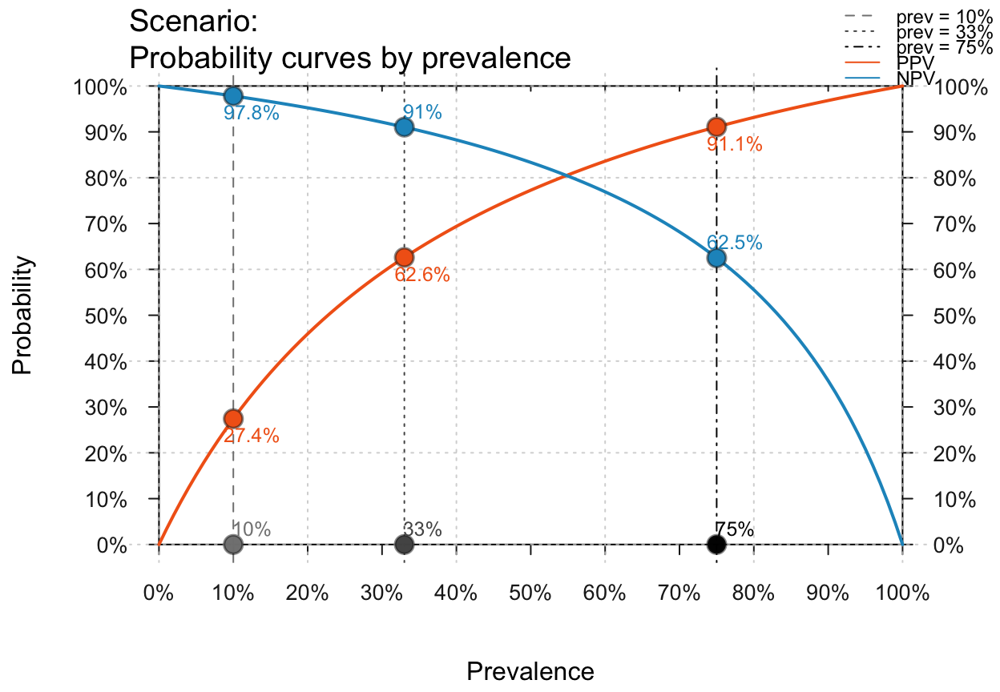
plot_curve(prev = c(.10, .33, .75), p_lbl = "no", uc = .10) # 3 prev, no labels, 10% uc
#> Multiple prevalence values provided: Using numeric values to label points.
 # Provide local parameters and select curves:
plot_curve(prev = .2, sens = .8, spec = .6, what = c("PPV", "NPV", "acc"), uc = .2)
# Provide local parameters and select curves:
plot_curve(prev = .2, sens = .8, spec = .6, what = c("PPV", "NPV", "acc"), uc = .2)
 # Selecting curves: what = ("prev", "PPV", "NPV", "ppod", "acc") = "all"
plot_curve(prev = .3, sens = .9, spec = .8, what = "all") # all curves
# plot_curve(what = c("PPV", "NPV")) # PPV and NPV
plot_curve(what = c("prev", "PPV", "NPV", "acc")) # prev, PPV, NPV, and acc
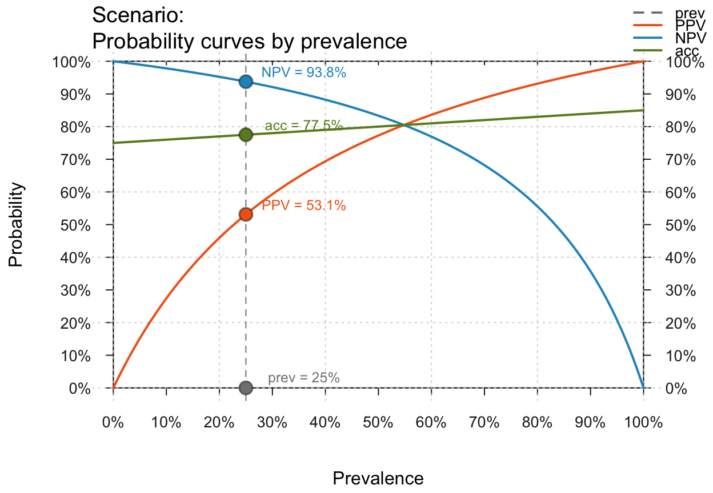
# plot_curve(what = c("prev", "PPV", "NPV", "ppod")) # prev, PPV, NPV, and ppod
# Visualizing uncertainty (uc as percentage range):
plot_curve(prev = .2, sens = .9, spec = .8, what = "all",
uc = .10) # all with a 10% uncertainty range
# Selecting curves: what = ("prev", "PPV", "NPV", "ppod", "acc") = "all"
plot_curve(prev = .3, sens = .9, spec = .8, what = "all") # all curves
# plot_curve(what = c("PPV", "NPV")) # PPV and NPV
plot_curve(what = c("prev", "PPV", "NPV", "acc")) # prev, PPV, NPV, and acc
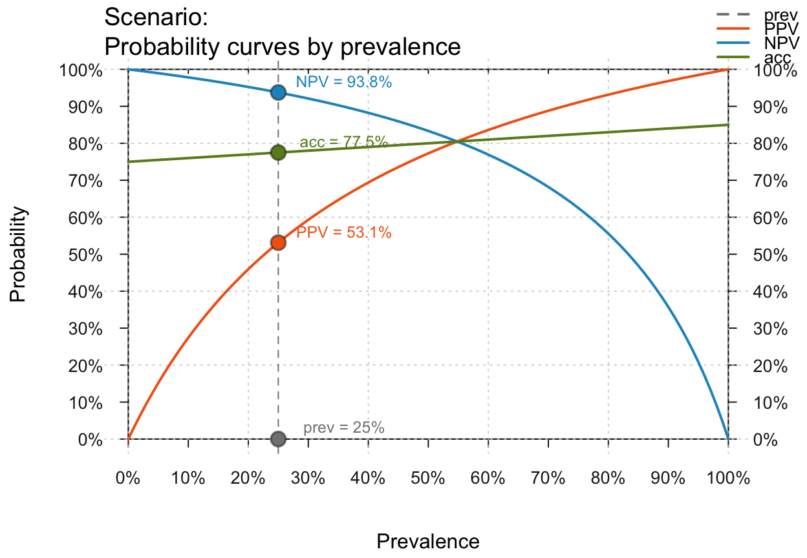
# plot_curve(what = c("prev", "PPV", "NPV", "ppod")) # prev, PPV, NPV, and ppod
# Visualizing uncertainty (uc as percentage range):
plot_curve(prev = .2, sens = .9, spec = .8, what = "all",
uc = .10) # all with a 10% uncertainty range
 # plot_curve(prev = .3, sens = .9, spec = .8, what = c("prev", "PPV", "NPV"),
# uc = .05) # prev, PPV and NPV with a 5% uncertainty range
# X-axis on linear vs. log scale:
plot_curve(prev = .01, sens = .9, spec = .8) # linear scale
# plot_curve(prev = .3, sens = .9, spec = .8, what = c("prev", "PPV", "NPV"),
# uc = .05) # prev, PPV and NPV with a 5% uncertainty range
# X-axis on linear vs. log scale:
plot_curve(prev = .01, sens = .9, spec = .8) # linear scale
 plot_curve(prev = .01, sens = .9, spec = .8, log_scale = TRUE) # log scale
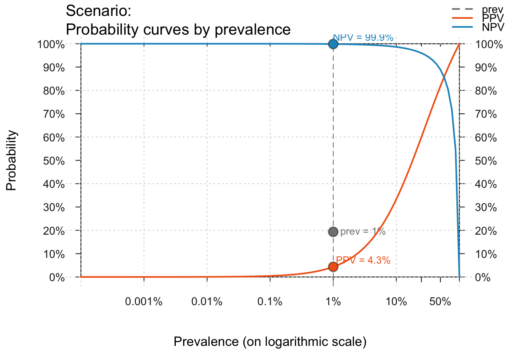
# Several small prev values:
plot_curve(prev = c(.00001, .0001, .001, .01, .05),
sens = .9, spec = .8, log_scale = TRUE)
#> Multiple prevalence values provided: Using numeric values to label points.
# Zooming in by setting prev_range (of prevalence values):
plot_curve(prev = c(.25, .33, .40), prev_range = c(.20, .50),
what = "all", uc = .05)
#> Multiple prevalence values provided: Using numeric values to label points.
plot_curve(prev = .01, sens = .9, spec = .8, log_scale = TRUE) # log scale
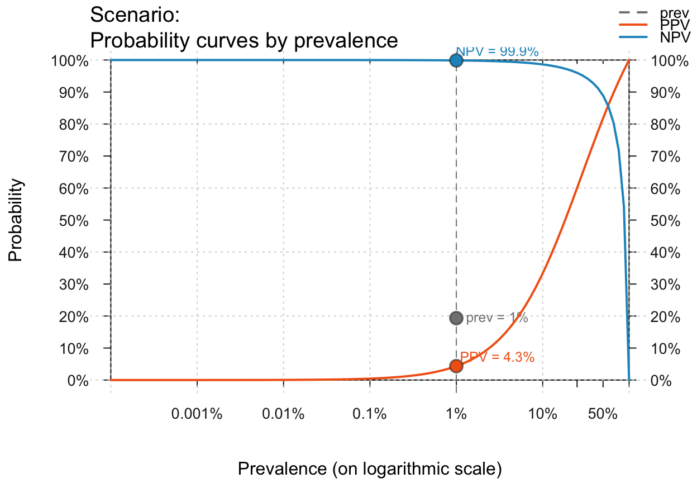
# Several small prev values:
plot_curve(prev = c(.00001, .0001, .001, .01, .05),
sens = .9, spec = .8, log_scale = TRUE)
#> Multiple prevalence values provided: Using numeric values to label points.
# Zooming in by setting prev_range (of prevalence values):
plot_curve(prev = c(.25, .33, .40), prev_range = c(.20, .50),
what = "all", uc = .05)
#> Multiple prevalence values provided: Using numeric values to label points.
 # Probability labels:
plot_curve(p_lbl = "abb", what = "all") # abbreviated names
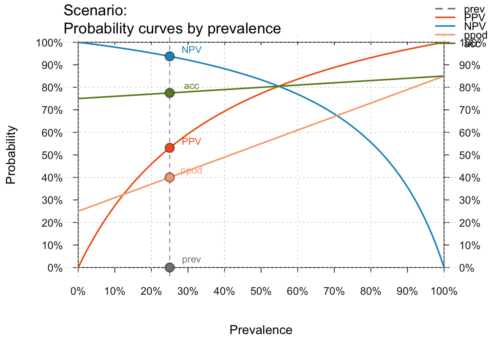
plot_curve(p_lbl = "nam", what = "all") # names only
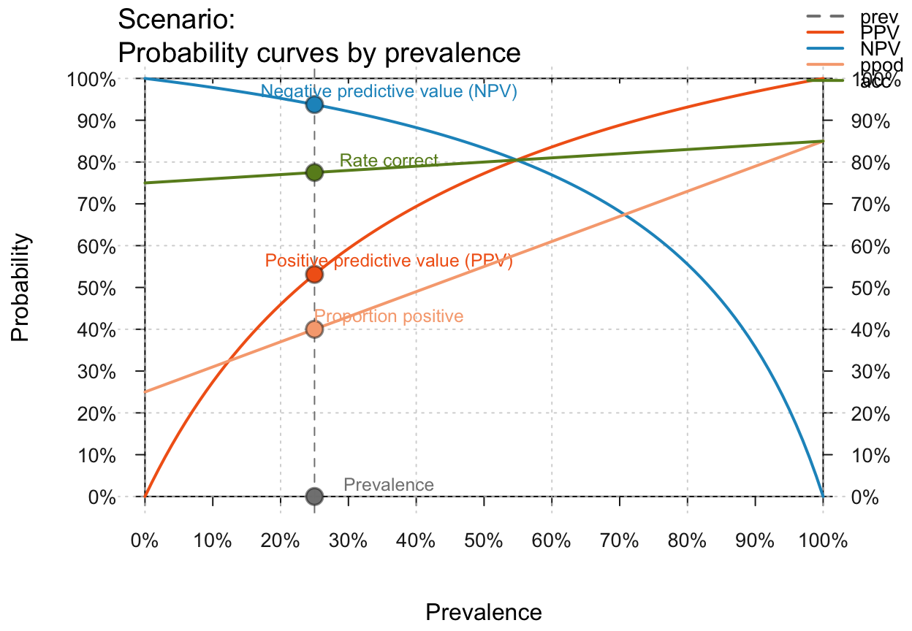
plot_curve(p_lbl = "num", what = "all") # numeric values only
# Probability labels:
plot_curve(p_lbl = "abb", what = "all") # abbreviated names
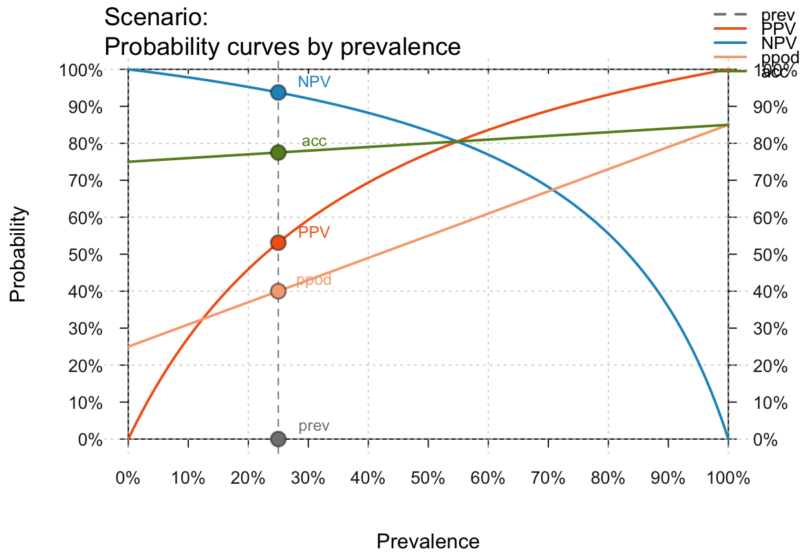
plot_curve(p_lbl = "nam", what = "all") # names only
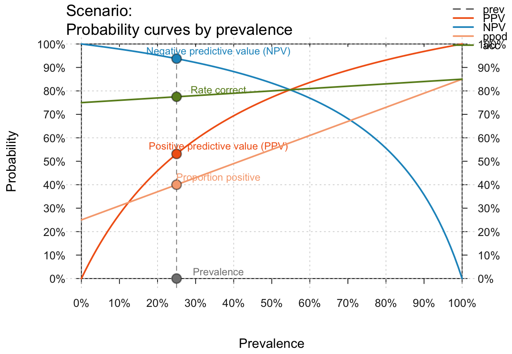
plot_curve(p_lbl = "num", what = "all") # numeric values only
 plot_curve(p_lbl = "namnum", what = "all") # names and values
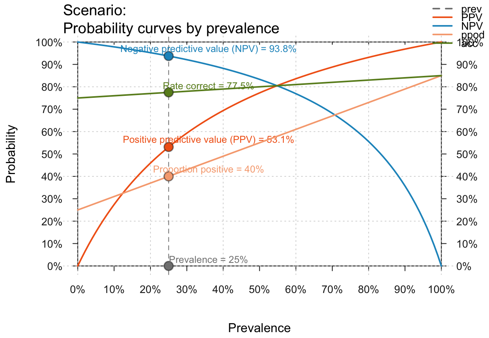
# Text and color settings:
plot_curve(main = "Tiny text labels", p_lbl = "namnum", cex_lbl = .60)
plot_curve(p_lbl = "namnum", what = "all") # names and values
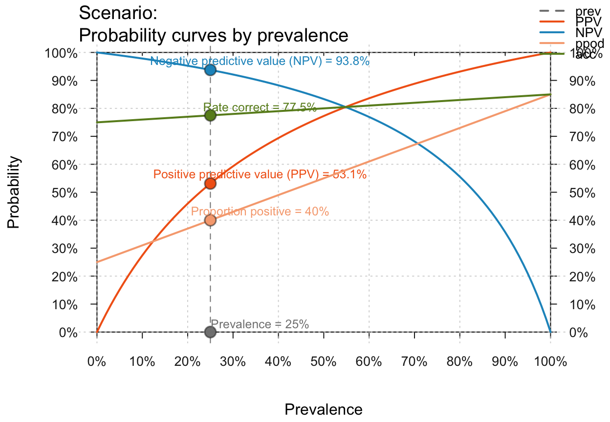
# Text and color settings:
plot_curve(main = "Tiny text labels", p_lbl = "namnum", cex_lbl = .60)
 plot_curve(main = "Specific colors", what = "all",
uc = .1, what_col = c("grey", "red3", "green3", "blue3", "gold"))
plot_curve(main = "Specific colors", what = "all",
uc = .1, what_col = c("grey", "red3", "green3", "blue3", "gold"))
 plot_curve(main = "Black-and-white print version",
what = "all", col_pal = pal_bwp)
plot_curve(main = "Black-and-white print version",
what = "all", col_pal = pal_bwp)